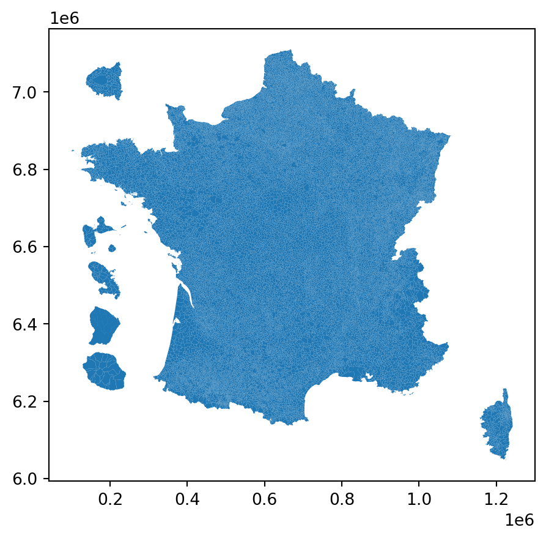

Faire une carte avec les DROM rapprochés grâce à cartiflette
Important
Cette page est un work in progress! Des exemples dans d’autres langages que Python viendront ultérieurement.
Cette page fait partie d’une série de tutoriels illustrant les fonctionnalités de cartiflette. Pour retrouver la liste de ceux-ci, c’est ici
Ce tutoriel vise à illustrer un cas d’usage classique de cartiflette : récupérer de manière flexible un fonds de carte dont les DROM sont rapprochés et où on voit un zoom sur l’Ile de France.
Ce besoin classique est illustré en répliquant la carte faite par Jules Grandin pour son podcast “La Minute Cartographique” L’objectif final de ce tutoriel est de faire cette carte:
messageBelowMap = {
const isMobile = /iPhone|iPad|iPod|Android/i.test(navigator.userAgent);
let messageBelowMap = `<div><i>Passer la souris sur la carte pour afficher des informations sur chaque département</i></div>`
if (isMobile) {
let messageBelowMap = `<div><i>Cliquer sur la carte pour afficher des informations sur chaque département</i></div>`
}
return messageBelowMap
}Voir l’épisode en question de “La Minute Cartographique”
Pourquoi utiliser cartiflette pour ce type de besoins ?
- Beaucoup moins de ligne de code à écrire :
- Réduit le temps nécessaire avant d’obtenir une carte exploratoire, ce qui permet de se concentrer sur la construction de celle-ci plutôt que les étapes antérieures
- Réduit la difficulté à mettre à jour le code ;
- Moins de bande passante et d’espace disque utilisé car seule la donnée nécessaire est téléchargée ;
- Moindre besoin d’expertise en SIG car la librairie fournit un
GeoDataFrameprêt à l’emploi ce qui ne nécessite pas une connaissance pointue dans le domaine (système de projection, format shapefile, etc.) ; - Moins de risque d’erreur que lorsqu’on fait soi-même la combinaison de sources à des niveaux administratifs différents (accoler le masque des arrondissements à celui des communes limitrophes nécessite beaucoup de précautions) ;
- Bénéficier de métadonnées supplémentaires sur les communes que les fonds de carte
AdminExpress
1 Préliminaire: récupération des cheptels français
La vidéo de Jules Grandin évoque une ouverture et préparation des données dans Excel 😱. Néanmois, en quelques lignes de code, on peut render ces données propres à l’analyse statistique et cartographique avec Python 😌
Préparation des données avec Pandas
import pandas as pd
def import_cheptel():
url_cheptel = "https://www.insee.fr/fr/statistiques/fichier/2012795/TCRD_073.xlsx"
cheptel2022 = pd.read_excel(url_cheptel, header=3, na_values="nd")
type_cheptel = cheptel2022.columns[~cheptel2022.columns.str.startswith("Unnamed")]
cheptel2022.loc[:, type_cheptel] = cheptel2022.loc[:, type_cheptel].mul(1000)
cheptel2022 = cheptel2022.rename(
{
"Unnamed: 0": "code",
"Unnamed: 1": "departement",
"Volailles gallus": "Volailles",
},
axis="columns",
)
type_cheptel = type_cheptel.str.replace(" gallus", "")
return cheptel2022, type_cheptel
cheptel = import_cheptel()
cheptel[0].head(4)- 1
- Les premières lignes sont de la documentation, les données ne commencent réellement que ligne 4
- 2
- Extraction du type de bêtes, cela sera plus utile ultérieurement
- 3
- Les données sont en milliers de tête, on ajuste pour pouvoir comparer à la population
- 4
- La ligne correspondant aux noms de variable n’est pas complète dans le Excel. Il faut donc retravailler les noms de colonnes.
- 5
- On renvoie la donnée et la liste des bêtes
| code | departement | Bovins | Porcins | Ovins | Caprins | Volailles | |
|---|---|---|---|---|---|---|---|
| 0 | 01 | Ain | 159900.0 | 134100.0 | 21900.0 | 7200.0 | NaN |
| 1 | 02 | Aisne | 180400.0 | 48700.0 | 29100.0 | 800.0 | NaN |
| 2 | 03 | Allier | 495900.0 | 88000.0 | 147100.0 | 9100.0 | NaN |
| 3 | 04 | Alpes-de-Haute-Provence | 14500.0 | 2500.0 | 193800.0 | 8600.0 | NaN |
En ce qui concerne la population, qui nous servira au dénominateur de notre indicateur, nous allons utiliser la variable fournie dans les données récupérées par le biais de cartiflette1.
2 Récupérer les contours modifiés via cartiflette
2.1 La récupération des données utilisant cartiflette
Notre objectif est de faire une carte aux caractéristiques suivantes:
- Les DROM sont rapprochés de la France hexagonale en étant placés sous celle-ci ;
- Un cartogramme zoomé de la petite couronne parisienne (départements de la Seine, Hauts-de-Seine, Seine-Saint-Denis et Val de Marne) est disponible en haut à gauche de celle-ci.
Construire soi-même ce fonds de carte est fastidieux, comme l’illustre la partie Comment faire sans cartiflette. Avec cartiflette, ce fonds de carte est préconstruit à partir des découpages officiels de l’IGN. Il suffit de remplace le niveau FRANCE_ENTIERE en FRANCE_ENTIERE_DROM_RAPPROCHES dans l’appel à carti_download.
departements est un GeoDataFrame classique proposant les métadonnées usuelles de cartiflette avec des géographies modifiées pour rapprocher la France des DROM2.
departements.boundary.plot(edgecolor = "black", linewidth=0.2)
2.2 Association du fonds de carte cartiflette au jeu de données initial
La suite du travail n’est pas intrinsèquement lié à cartiflette mais correspond à de la manipulation de données spatiales nécessaires à la finalisation de la carte.
Comme nous avons besoin de localiser les décomptes départements de bétail, nous faisons une jointure spatiale entre notre fonds de carte et nos cheptels
cheptel_geospatial = departements.merge(
cheptel[0], left_on="INSEE_DEP", right_on = "code"
)A partir de là, on finalise notre travail sur le jeu de données pour calculer le ratio entre le nombre de têtes et la population:
Dérouler pour voir la finalisation du travail de données
def ratio_cheptel(type_cheptel, data_departement):
"""
Fonction permettant de rapporter, pour un type de bête donné,
le nombre de têtes par habitant d'un département
"""
data_departement = data_departement.copy()
data_departement["ratio_" + type_cheptel] = (
data_departement.loc[:, type_cheptel]
.div(data_departement["POPULATION"], axis=0)
)
data_departement["more_" + type_cheptel] = (
data_departement["ratio_" + type_cheptel] > 1
)
return data_departement.loc[:, "more_" + type_cheptel]
eval_ratio = pd.concat(
[ratio_cheptel(bete, cheptel_geospatial) for bete in cheptel[1]],
axis = 1
)
cheptel_geospatial = pd.concat(
[cheptel_geospatial, eval_ratio],
axis = 1
)- 1
- Un DataFrame temporaire permettant de définir, par le biais d’une boucle, nos indicateurs de population.
- 2
- On associe ces nouvelles colonnes à nos données initiales
Le jeu de données prêt à l’emploi prend la forme suivante:
cheptel_geospatial.head(2)| INSEE_DEP | PAYS | LIBELLE_DEPARTEMENT | POPULATION | SOURCE | geometry | code | departement | Bovins | Porcins | Ovins | Caprins | Volailles | more_Bovins | more_Porcins | more_Ovins | more_Caprins | more_Volailles | |
|---|---|---|---|---|---|---|---|---|---|---|---|---|---|---|---|---|---|---|
| 0 | 43 | France | Haute-Loire | 227570 | IGN:EXPRESS-COG-CARTO-TERRITOIRE | POLYGON ((3.89745 45.35699, 3.89731 45.35658, ... | 43 | Haute-Loire | 209400.0 | 61000.0 | 146500.0 | 14800.0 | NaN | False | False | False | False | False |
| 1 | 65 | France | Hautes-Pyrénées | 229567 | IGN:EXPRESS-COG-CARTO-TERRITOIRE | MULTIPOLYGON (((-0.09705 43.5822, -0.09642 43.... | 65 | Hautes-Pyrénées | 99200.0 | 44400.0 | 128800.0 | 5300.0 | NaN | False | False | False | False | False |
2.3 Production de la carte interactive
On peut maintenant se concentrer sur la carte. Pour la rendre plus informative, il est utile de contextualiser les départements en permettant aux spectateurs de la carte de connaître le nom des départements ayant un cheptel plus important que sa population.
Cela peut être fait comme sur la carte d’origine de Jules Grandin en inscrivant les noms des départements concernés sur celle-ci. Cela nécessite tout de même un travail manuel important pour qui n’utilise pas une interface comme QGIS.
Il est plus simple, pour les utilisateurs de logiciels comme Python, R ou Javascript de produire une carte interactive qui permet d’afficher des valeurs lorsqu’on passe la souris dessus. Il existe plusieurs écosystèmes pour faire cela, plus ou moins directement reliés à Javascript, le langage consacré pour ce type d’applications réactives.
Les exemples ci-dessous proposent un code en Python pour faire une carte interactive par le biais de la librairie Folium. Cette manière de procéder étant un peu fastidieuse, car Folium n’est pas initialement conçu pour ce type de cartes, il est recommandé de privilégier la solution Observable qui est un framework Javascript ressemblant beaucoup à Python mais plus adapté que ce dernier pour la dataviz.
En premier lieu, on définit une fonction générique qui permet de construire, pour un type de cheptel donné, la carte qui sera créée:
Définition d’une fonction générique pour créer la carte
import folium
import branca
palettes = {
"Bovins": {True: "#f9b439", False: "#d8d4d3"},
"Porcins": {True: "#ec6569", False: "#d8d4d3"},
"Ovins": {True: "#5eb04e", False: "#d8d4d3"},
"Caprins": {True: "#5eb04e", False: "#d8d4d3"}
}
# Function to apply color based on the 'more_XXXXX' values
def style_function(feature, bete):
more_bovins = feature['properties'][f'more_{bete}']
return {
'fillColor': palettes[bete][more_bovins],
'color': 'black',
'weight': 1,
'fillOpacity': 0.7,
}
def map_repartition(cheptel_geospatial, bete):
white_tile = branca.utilities.image_to_url([[1, 1], [1, 1]])
# Initialize a folium map
m = folium.Map(
location=[
cheptel_geospatial.geometry.centroid.y.mean(), cheptel_geospatial.geometry.centroid.x.mean()
],
zoom_start=5,
tiles=white_tile, attr="white tile"
)
# Add GeoJson layer to the map
folium.GeoJson(
cheptel_geospatial,
style_function=lambda x: style_function(x, bete),
tooltip=folium.GeoJsonTooltip(
fields=['LIBELLE_DEPARTEMENT', 'POPULATION', bete],
aliases=['Department:', 'Population:', f'{bete}:'],
localize=True
)
).add_to(m)
return m- 1
-
Foliumest une librairie qui est pensée, avant tout, pour proposer un fonds de carte typeOpenStreetMapen arrière-plan. Celui-ci ne nous intéresse pas ici car nous avons créé des éléments sans contrepartie sur la Terre (les DROM sous la France, le zoom de l’Ile de France au nord ouest de la Normandie). Nous créons donc un fond blanc qui est utilisé de manière détournée par Folium.
Pour créer celles-ci, il suffit dès lors d’appliquer la fonction sur le type d’élevage désiré:
Visualiser par le biais de Folium
map_repartition(cheptel_geospatial, "Bovins")
map_repartition(cheptel_geospatial, "Porcins")
map_repartition(cheptel_geospatial, "Ovins")Néanmoins, ce n’est pas la méthode adoptée pour créer les cartes ci-dessous:
Pour cela, il vaut mieux utiliser Javascript par le biais d’Observable dont le code est disponible dans la boite déroulable ci-dessous:
Comment faire avec
Javascript ?
Ce tutoriel utilise le framework Observable par le biais de Quarto, l’outil de construction de site web développé par Posit. Le code source de cette page est disponible ici3.
Pour se simplifier la tâche, on va créer une fonction graphique qui prend en input un Array et un type d’élevage (par exemple “Bovins”) et renvoie une carte:
import {addTooltips} from "@mkfreeman/plot-tooltip"
function produceMap(cheptel, bete){
const carte = addTooltips(
Plot.plot({
marginLeft: 0,
marginRight: 0,
width: 400,
height: 400,
color: {
legend: true,
value: [
labels_widgets.filter(d => d.type == bete)[0].true,
labels_widgets.filter(d => d.type == bete)[0].false
],
range: [
palettes.filter(d => d.name == bete)[0].trueColor,
palettes.filter(d => d.name == bete)[0].falseColor
],
label: "Alors ?"
},
y: {axis: null},
x: {axis: null},
marks: [
Plot.geo(cheptel, {
fill: (d) => labels_widgets.filter(d => d.type == bete)[0][d.properties[bete] > d.properties.POPULATION],
sort: {
color: "fill",
reverse: true
},
title: (d) => `${d.properties.LIBELLE_DEPARTEMENT} (${d.properties.INSEE_DEP}) \nCheptel: ${d.properties[bete]} \nPopulation: ${d.properties.POPULATION} \n Ratio: ${(d.properties[bete]/d.properties.POPULATION).toLocaleString(undefined, {maximumSignificantDigits: 2})}`,
})
]
})
)
return carte
}Celle-ci utilise un certain nombre d’ingrédients. En premier lieu, des arrays permettant de changer les valeurs affichées en fonction de la valeur du widget sélectionné :
labels_widgets = [
{type: "Bovins", true: "Plus de vaches 🐮", false: "Plus d'habitants"},
{type: "Porcins", true: "Plus de cochons 🐷", false: "Plus d'habitants"},
{type: "Ovins", true: "Plus de moutons 🐑", false: "Plus d'habitants"},
{type: "Caprins", true: "Plus de chèvres 🐐", false: "Plus d'habitants"}
]
title = [
{type: "Bovins", title: "Plus de vaches 🐮 ou d'habitants ?"},
{type: "Porcins", title: "Plus de cochons 🐷 ou d'habitants ?"},
{type: "Ovins", title: "Plus de moutons 🐑 ou d'habitants ?"},
{type: "Caprins", title: "Plus de chèvres 🐐 ou d'habitants ?"}
]
palettes = [
{
name: "Bovins",
trueColor: "#f9b439",
falseColor: "#d8d4d3"
},
{
name: "Porcins",
trueColor: "#ec6569",
falseColor: "#d8d4d3"
},
{
name: "Ovins",
trueColor: "#5eb04e",
falseColor: "#d8d4d3"
},
{
name: "Caprins",
trueColor: "#00b5ed",
falseColor: "#d8d4d3"
}
]
title_chosen = title.filter(d => d.type == bete)[0].titleCe widget est un radio button qui peut être créé par le code suivant, permettant à la fois d’exposer celui-ci sur l’interface et de stocker sa valeur active dans la variable bete
viewof bete = Inputs.radio(
new Map([["Vaches 🐮", "Bovins"], ["Cochons 🐷", "Porcins"], ["Moutons 🐑", "Ovins"]]), {value: "Bovins"}
)Il ne manque qu’à importer les données nécessaires à la carte dans Javascript. La fonction ojs_define permettant la transmission d’un objet Python à R ne fonctionnant pas pour un GeoPandas, le plus simple est de créer un GeoJSON en Python :
cheptel_geospatial.to_file(
"cheptel.json", driver="GeoJSON"
)Il suffit ensuite d’importer celui-ci avec la fonction FileAttachment d’Observable
cheptel = FileAttachment("cheptel.json").json()4 Bilan
Si le fait qu’il suffise que le code de cartiflette se réduise à Listing 1 contre Listing 2, Listing 3, Listing 5, Listing 6, Listing 7, Listing 8, Listing 9,Listing 10 pour obtenir un résultat équivalent ne suffit pas, si le fait que le GeoDataFrame obtenu avec cartiflette comporte plus de métadonnées que celui créé sans ce package n’est pas non plus suffisant, la suite déroule quelques arguments supplémentaires de l’intérêt d’utiliser cartiflette.
4.1 Volume de données téléchargées
Fonction convert_size pour avoir les tailles de fichiers dans un format lisible par un humain
# Convert to a human-readable format (e.g., MB, GB)
def convert_size(size_bytes):
if size_bytes == 0:
return "0B"
size_name = ("B", "KB", "MB", "GB", "TB")
i = int(math.floor(math.log(size_bytes, 1024)))
p = math.pow(1024, i)
s = round(size_bytes / p, 2)
return f"{s} {size_name[i]}"Evaluation de la taille des fichiers issus d’AdminExpress
import math
import os
from pathlib import Path
# Path to the zipped file
zipped_file = "ADMIN-EXPRESS-COG-CARTO_3-1__SHP_WGS84G_FRA_2022-04-15.7z"
# Get the size of the zipped file in bytes
zipped_size = os.path.getsize(zipped_file)
# Path to the directory containing unzipped files
unzipped_dir = "./extracted_files"
root_directory = Path(unzipped_dir)
size_dir = sum(f.stat().st_size for f in root_directory.glob('**/*') if f.is_file())
poids_archive_compressee = convert_size(zipped_size)
poids_archive_decompressee = convert_size(size_dir)Evaluation de la taille des mêmes données issues de cartiflette
writedir = "cartiflette-data/usecase2"
os.makedirs(writedir, exist_ok=True)
departements.to_file(
f"{writedir}/contours.shp"
)
poids_archive_cartiflette_bytes = os.path.getsize(f"{writedir}/contours.shp")
poids_archive_cartiflette = convert_size(
poids_archive_cartiflette_bytes
)- 1
-
On crée un shapefile avec le
GeoDataFrameobtenu depuiscartifletteafin d’avoir une comparaison honnête avec le fonds de carte issu du site de l’IGN.
La première base de comparaison possible est la taille sur disque des fonds de carte récupérés par cartiflette ou sans passer par ce package. Le code ci-dessus ☝️ permet de construire les statistiques suivantes:
- Les données
cartiflettereprésenteraient 11.78 MB si elles étaient stockées sur disque. - Sans passer par
cartiflette, on a besoin de 240.67 MB pour stocker les fonds de carte décompressés auxquels il faut ajouter 142.86 MB pour stocker l’archive compressée.
Autrement dit, les données récupérées sans cartiflette représentent 33 fois le volume de celles exclusivement nécessaires pour cette carte.
L’arborescence du dossier décompressé est également assez conséquente: nous avons 68 fichiers. L’arborescence complète obtenue sans cartiflette est disponible ci-dessous. Avec cartiflette aucun fichier n’est écrit sur disque, tout est directement accessible dans la session Python.
Arborescence complète
extracted_files/
└── ADMIN-EXPRESS-COG-CARTO_3-1__SHP_WGS84G_FRA_2022-04-15/
├── ADMIN-EXPRESS-COG-CARTO/
│ ├── 1_DONNEES_LIVRAISON_2022-04-15/
│ │ ├── ADECOGC_3-1_SHP_WGS84G_FRA/
│ │ │ ├── ARRONDISSEMENT.cpg
│ │ │ ├── ARRONDISSEMENT.dbf
│ │ │ ├── ARRONDISSEMENT.prj
│ │ │ ├── ARRONDISSEMENT.shp
│ │ │ ├── ARRONDISSEMENT.shx
│ │ │ ├── ARRONDISSEMENT_MUNICIPAL.cpg
│ │ │ ├── ARRONDISSEMENT_MUNICIPAL.dbf
│ │ │ ├── ARRONDISSEMENT_MUNICIPAL.prj
│ │ │ ├── ARRONDISSEMENT_MUNICIPAL.shp
│ │ │ ├── ARRONDISSEMENT_MUNICIPAL.shx
│ │ │ ├── CANTON.cpg
│ │ │ ├── CANTON.dbf
│ │ │ ├── CANTON.prj
│ │ │ ├── CANTON.shp
│ │ │ ├── CANTON.shx
│ │ │ ├── CHFLIEU_ARRONDISSEMENT_MUNICIPAL.cpg
│ │ │ ├── CHFLIEU_ARRONDISSEMENT_MUNICIPAL.dbf
│ │ │ ├── CHFLIEU_ARRONDISSEMENT_MUNICIPAL.prj
│ │ │ ├── CHFLIEU_ARRONDISSEMENT_MUNICIPAL.shp
│ │ │ ├── CHFLIEU_ARRONDISSEMENT_MUNICIPAL.shx
│ │ │ ├── CHFLIEU_COMMUNE.cpg
│ │ │ ├── CHFLIEU_COMMUNE.dbf
│ │ │ ├── CHFLIEU_COMMUNE.prj
│ │ │ ├── CHFLIEU_COMMUNE.shp
│ │ │ ├── CHFLIEU_COMMUNE.shx
│ │ │ ├── CHFLIEU_COMMUNE_ASSOCIEE_OU_DELEGUEE.cpg
│ │ │ ├── CHFLIEU_COMMUNE_ASSOCIEE_OU_DELEGUEE.dbf
│ │ │ ├── CHFLIEU_COMMUNE_ASSOCIEE_OU_DELEGUEE.prj
│ │ │ ├── CHFLIEU_COMMUNE_ASSOCIEE_OU_DELEGUEE.shp
│ │ │ ├── CHFLIEU_COMMUNE_ASSOCIEE_OU_DELEGUEE.shx
│ │ │ ├── COLLECTIVITE_TERRITORIALE.cpg
│ │ │ ├── COLLECTIVITE_TERRITORIALE.dbf
│ │ │ ├── COLLECTIVITE_TERRITORIALE.prj
│ │ │ ├── COLLECTIVITE_TERRITORIALE.shp
│ │ │ ├── COLLECTIVITE_TERRITORIALE.shx
│ │ │ ├── COMMUNE.cpg
│ │ │ ├── COMMUNE.dbf
│ │ │ ├── COMMUNE.prj
│ │ │ ├── COMMUNE.shp
│ │ │ ├── COMMUNE.shx
│ │ │ ├── COMMUNE_ASSOCIEE_OU_DELEGUEE.cpg
│ │ │ ├── COMMUNE_ASSOCIEE_OU_DELEGUEE.dbf
│ │ │ ├── COMMUNE_ASSOCIEE_OU_DELEGUEE.prj
│ │ │ ├── COMMUNE_ASSOCIEE_OU_DELEGUEE.shp
│ │ │ ├── COMMUNE_ASSOCIEE_OU_DELEGUEE.shx
│ │ │ ├── DEPARTEMENT.cpg
│ │ │ ├── DEPARTEMENT.dbf
│ │ │ ├── DEPARTEMENT.prj
│ │ │ ├── DEPARTEMENT.shp
│ │ │ ├── DEPARTEMENT.shx
│ │ │ ├── EPCI.cpg
│ │ │ ├── EPCI.dbf
│ │ │ ├── EPCI.prj
│ │ │ ├── EPCI.shp
│ │ │ ├── EPCI.shx
│ │ │ ├── REGION.cpg
│ │ │ ├── REGION.dbf
│ │ │ ├── REGION.prj
│ │ │ ├── REGION.shp
│ │ │ └── REGION.shx
│ │ └── ADECOGC_3-1_SHP_WGS84G_FRA.md5
│ ├── 1_DONNEES_LIVRAISON_2022-04-15.md5
│ ├── 2_METADONNEES_LIVRAISON_2022-04-15/
│ │ ├── ADECOGC_3-1_SHP_WGS84G_FRA/
│ │ │ ├── IGNF_ADECOGC_3-1_SHP_WGS84G_FRA.html
│ │ │ └── IGNF_ADECOGC_3-1_SHP_WGS84G_FRA.xml
│ │ └── ADECOGC_3-1_SHP_WGS84G_FRA.md5
│ ├── 2_METADONNEES_LIVRAISON_2022-04-15.md5
│ └── LISEZ-MOI.pdf
└── ADMIN-EXPRESS-COG-CARTO.md54.2 Nombre de lignes de code
En ce qui concerne le temps de développement de ce code, on est sur quelques secondes pour le code avec cartiflette en utilisant la documentation interactive d’exemples contre plusieurs dizaines de minutes pour le code sans cartiflette.
4.3 Temps de traitement
Le code cartiflette permet de récupérer les éléments contextuels nécessaires en 12 secondes. Sans cartiflette, il faut 14 secondes. Sans cartiflette, soit un rapport de 1 à 1 pour cette tâche.
Footnotes
Dans l’idéal, nous utiliserions les populations légales mesurées par l’Insee. Les fonds de carte de l’IGN proposent néanmoins déjà une variable
POPULATIONqui est celle qui sera utilisée ici. Des travaux ultérieurs surcartifletteviseront à remplacer cette variable par les populations légales pour assurer que les métadonnées utilisées par les fonds de carte correspondent, au même titre que les découpages géométriques, aux données officielles.↩︎Ce fonds de carte est en géométrie WGS84 (CRS: 4326). Ce n’est néanmoins qu’une apparence car les géométries nécessaires pour représenter les DROM et l’Ile de France sur cette carte ne correspondent à aucune réalité terrestre. Il ne faut donc considérer ce fonds de carte que pour la cartographie finale, pas la manipulation de données géographique (par exemple pour un calcul de distance terrestre). Pour celles-ci, le fonds de carte normal à utiliser est
FRANCE_ENTIERE.↩︎Javascriptest un langage asynchrone donc l’exécution du code ne dépend pas de l’ordre de définition des objets dans le code, contrairement àPython. Il est donc normal de voir dans les codes ci-dessous une utilisation d’une variable, par exemplebete, qui n’est pas définie en amont. Celle-ci peut être définie plus loin dans le code, c’estJavascriptqui va réordonner de manière logique l’exécution du code.↩︎L’emplacement des DROM produit par ce code
Pythonest différent de celui du fond de carte decartiflette. Ce dernier est généré grâce àmapshaperen s’inspirant d’un tutoriel d’Eric Mauvière. Celui proposé ici enPythonest inspiré d’un codeRd’un éminent collègue de l’Insee, Lionel Cacheux.↩︎
3 Comment faire sans
cartiflette?L’approche est nettement plus fastidieuse sans
cartifletteet nécessite une expertise assez avancée en géomatique pour manipuler les géométries des objetsPython.Pour obtenir les mêmes données, prêtes à l’emploi, cela passe par cinq étapes principales:
Pythonet découper celui-ci en différents espaces qui seront reprojetésLa première étape consiste donc à télécharger le fichier depuis le site de mise à disposition de l’IGN. L’archive étant assez volumineuse, le code proposé propose une barre de progrès pour s’assurer que le téléchargement progresse.
Le code étant assez long, il n’est pas apparent par défaut mais il suffit de cliquer ci-dessous:
1️⃣ Code pour télécharger les données
La deuxième étape consiste à dézipper la version téléchargée en local
2️⃣ Dézipper la version téléchargée
La troisième étape consiste à importer les contours administratifs dans
Pythonet à séparer les DROM de la France hexagonaleCode Python pour découper le fond de carte AdminExpress
La quatrième étape est celle faisant appel à une expertise dans le domaine géomatique. Il est nécessaire de déplacer les départements d’Outre Mer. Du point de vue géométrique, cela implique de trouver les bonnes translations et rotations. Celles-ci sont données telles quelles.
Code
Code
Code
Code
Code
Enfin, la dernière étape consiste à consolider notre fonds de carte en réunissant les géométries ensemble4. On obtient un fonds de carte équivalent à celui de
cartiflettequi pourrait être utilisé de la même manière que précédemment ☝️.Code
